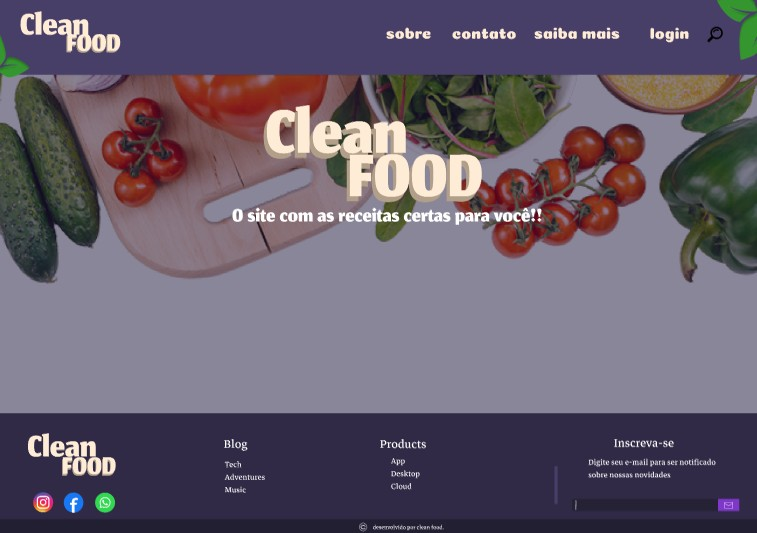
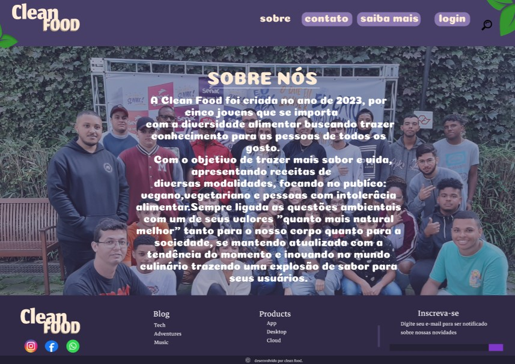
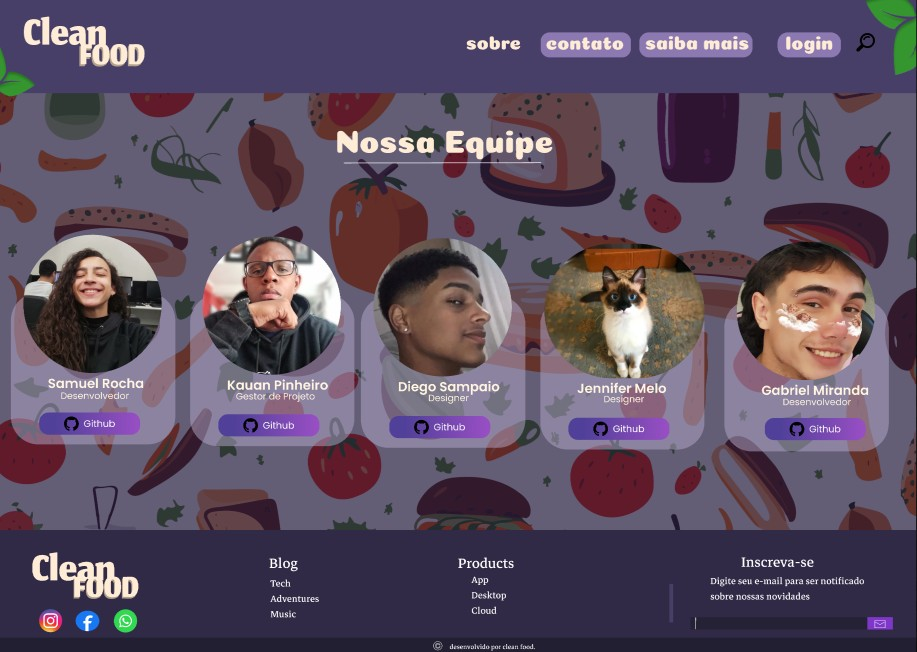
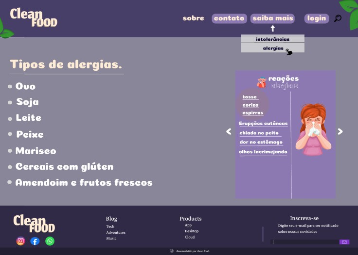
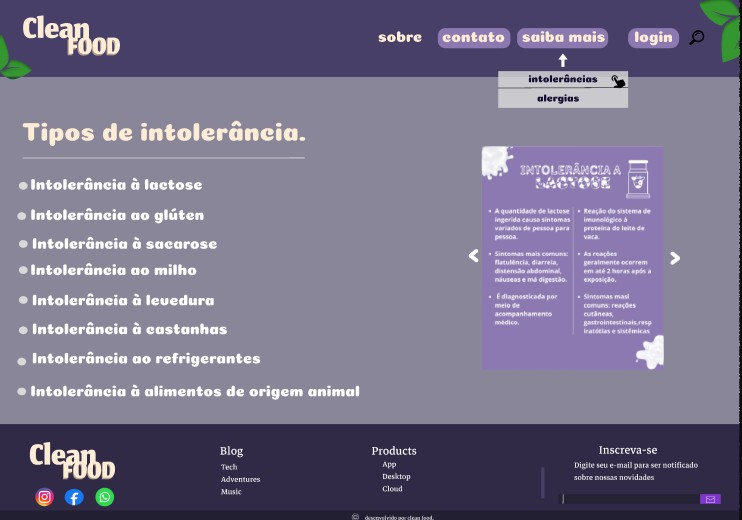
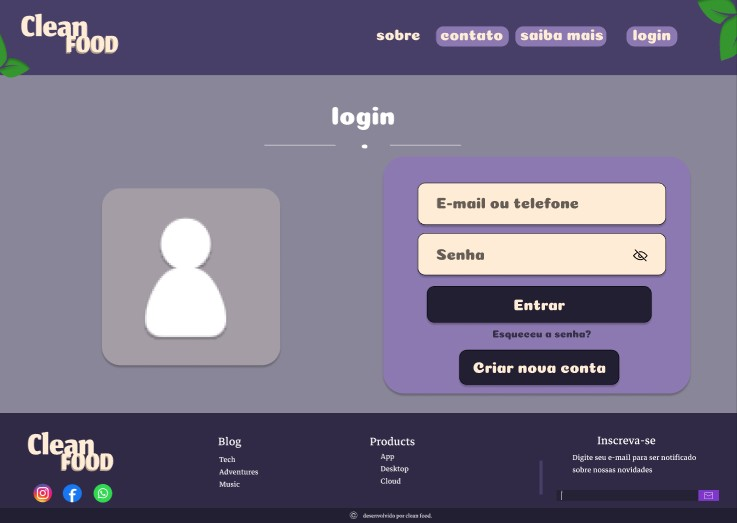

- Home
- Portifólio>
- Clean Food
Clean Food
Descrição do projeto
A Clean Food foi criada no ano de 2023, por cinco jovens que se importa com a diversidade alimentar buscando trazer conhecimento para as pessoas de todos os gosto. Com o objetivo de trazer mais sabor e vida, apresentando receitas de diversas modalidades, focando no publíco: vegano,vegetariano e pessoas com intolerâcia alimentar. Sempre ligada as questões ambientais com um de seus valores "quanto mais natural melhor" tanto para o nosso corpo quanto para a sociedade, se mantendo atualizada com a tendência do momento e inovando no mundo culinário trazendo uma explosão de sabor para seus usuários.
Objetivos Gerais e específicos
O site se propõe a fornecer uma experiência mais direcionada a pessoas que possuam limitações alimentares (como vegetarianos, veganos e pessoas com intolerância a certos alimentos), com isso pretende-se que o usuário se sinta acolhido e possa ter um acesso mais simples e direto.
Problemática
Mesmo com a grande massa de pessoas que vem aderindo ao veganismo, vegetarianismo ou com restrições alimentares, segue sendo difícil de achar um conteúdo direcionado a esse público na web. Sendo que as pesquisas realizadas pela sociedade Vegetariana Brasileira revelam que os adeptos da alimentação vegetariana somam 30 milhões de Brasileiros vegetarianos, cerca de 7 milhões seriam veganos (3,2% da população), segundo ABC repórter o diário aqueles que não consomem nenhum produto que tenha origem ou que foi testado em animais.
Desenvolvimento
As ferramentas utilizadas para o desenvolvimento web foi HTML (Hyper Markup Language) uma linguagem de marcação utilizada para dizer ao seu navegador como estrutura a página web que você visita, e CSS (Cascading Style Sheets) é um mecanismo para adicionar estilos a uma página web.
Conclusão
Os objetivos com o projeto foram 100% alcançado desde à ideia tirada do papel até subir na web, com todos os integrantes trabalhando de forma colaborativa e sincronizada, aplicando todos os conhecimentos adquirindo durante o início até os tempos de hoje no curso, com o site ficando igual o protótipo do Figma e atendendo todas as expectativas.
